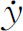

5．数学活动的扩张
在18世纪中，发起并支持数学研究的，与其说是大学，不如说是17世纪中期和末期建立起来的科学院。科学院还支持办杂志，使其成为发表新的工作的正式渠道。科学院事务方面的唯一变化是1795年巴黎科学院改组为法兰西学院下设三个分支中的一个。
1800年以前，德国的大学不作研究。它们提供两年人文科学的必修课，然后是法律、神学或医学的专门化课。大数学家不属于大学，而是归属柏林科学院。但在1810年，洪堡（Alexander von Humboldt，1769—1859）建立了柏林大学并提出一个基本的思想：教授应该讲授他们想讲的课程，而学生可以学习他们喜欢学习的东西。因此教授第一次可以按照他们的研究兴趣授课。比如雅可比从1826年起在哥尼斯堡（Koenigsberg）讲授他的关于椭圆函数的工作，虽然这仍然是很稀有的，而且其他教员必须负担自己的正规课程。19世纪时德国的许多王国、公国和自由城都设立了大学，开始支持搞研究的教授。
18世纪时法国的大学，至少一直到大革命时期，并不比德国的大学好。但是新政府决定建立高水平的大学，进行教学和研究。这项工作的组织者是孔多塞，他在数学方面有过一些活动。1794年建立的多科工艺学校，以蒙日和拉格朗日作为它的第一批数学教授。学生为被录取而互相竞争，他们接受培养其为工程师或军官的训练。事实上，课程的数学水平是很高的，因而毕业生能够从事数学研究。通过这种训练和出版的讲义，这所学校产生了广泛而有力的影响。1808年法国政府建立了高等师范学校，它的前身是师范学校，建于1794年，但只持续了几个月。这所新的学校是用来培养教师的，分成两部分：人文科学和自然科学。在这里，学生也为被录取而互相竞争，它也提供高深的课程，学习与研究的条件是好的，学习较好的学生被引导去搞研究。
18世纪时，欧洲各国在出数学成果的多寡方面差别相当大。领先的国家是法国，其次是瑞士。德国（指德意志各民族而言）相对说来不太活跃，虽然欧拉和拉格朗日是受柏林科学院资助的。英国也没有什么活力，泰勒、斯图尔特（Matthew Stewart，1717—1785）和麦克劳林是仅有的几位卓越的数学家。英国的这种可怜的状况，与它在17世纪时巨大的活动性相比，是令人难以置信的，但这是容易找到解释的。英国的数学家，不仅仅因为牛顿和莱布尼茨的争吵所造成的后果，而把他们每一个人孤立于大陆上的人们之外，而且因为他们遵循牛顿的几何方法而受到损害。英国人专心致志于研究牛顿，而不是研究自然界。甚至在他们的分析工作中，他们用牛顿表示流数和流量的记号，而拒绝阅读任何用莱布尼茨的记号写的东西。另外，在牛津和剑桥，甚至不容许任何一个犹太人或不信英国国教的人入学。大约在1815年前后，英国数学已奄奄一息了，天文学也差不多是这样。
在19世纪的前四分之一的时期内，英国数学家开始对在大陆上迅猛发展的微积分及其扩展的工作感兴趣。1813年剑桥成立了分析学会，研究这项工作。皮科克（George Peacock，1791—1858）、赫歇尔（John Herschel，1792—1871）、巴贝奇（Charles Babbage）以及另外一些人从事于研究“d-主义”的原理———即微积分中莱布尼茨用的符号（与“点状态”原理，或牛顿所用的符号相对立）。不久，商dy/dx代替了

，而且英国的学生开始能得到大陆上用的教科书。巴贝奇、皮科克和赫歇尔翻译并在1816年出版了拉克鲁瓦的《教程》的一卷版本。到1830年前后，英国人已经能够参加到大陆上的人的工作中去了。英国的分析，被证实大部分是数学物理，虽然几个完全新的工作方向（代数不变量理论和形式逻辑）也是在这个国家开创的。